Pukkelpop 2015
augustus 2015
Complete rebranding voor de 30ste verjaardag van het festival
- Oprichters
- Chokri Mahassine
- Bedrijf
- Pukkelpop
- Sector
- Festivals & events
- Locatie
- Kiewit, Hasselt Belgium
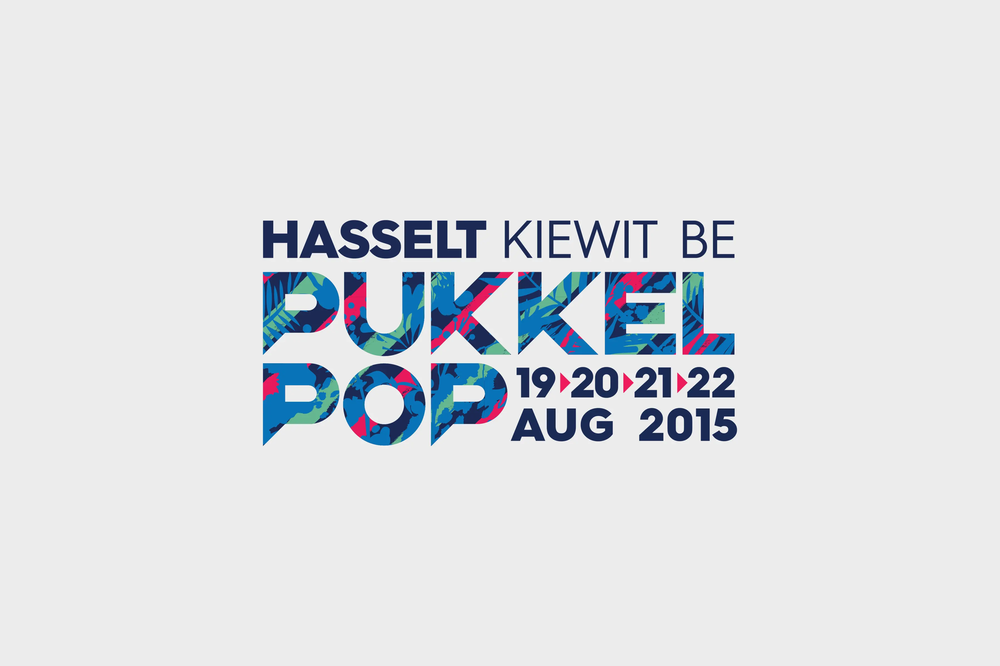
Over de case
Glossy Branding Agency werkte een complete rebranding uit voor de 30ste editie van Pukkelpop. Pukkelpop is vooral bekend om zijn liveoptredens, maar het is ook een ontdekkingsfestival dat op vier dagen meer dan 200 artiesten presenteert. Voor zo'n divers, inspirerend en vernieuwend festival is heldere en doeltreffende communicatie, online en offline, essentieel. Om de dynamische en levendige sfeer van het festival te vatten, verschijnt het Pukkelpop-logo op alle mogelijke digitale dragers altijd in beweging.
Glossy Branding Agency was betrokken bij alle aspecten van de nieuwe strategie: van het strategische rapport, de art direction en het websitedesign tot de aankleding van het terrein en de merchandise. Zo hielpen we Pukkelpop zich te onderscheiden als meer dan een muziekfestival, met een totaalaanpak in design die de geest en de waarden van het festival uitademt. Het resultaat is een coherente en aanstekelijke festivalervaring die bezoekers raakt en een blijvende indruk nalaat.
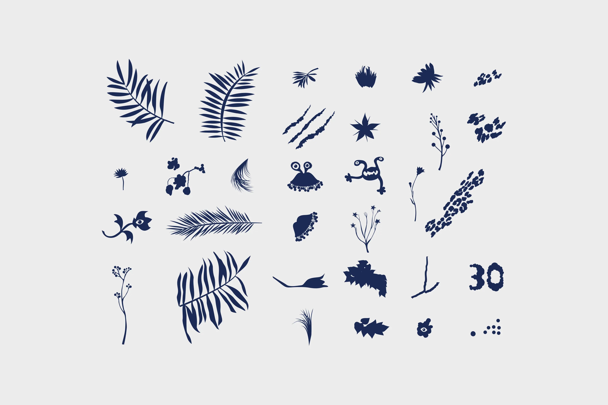
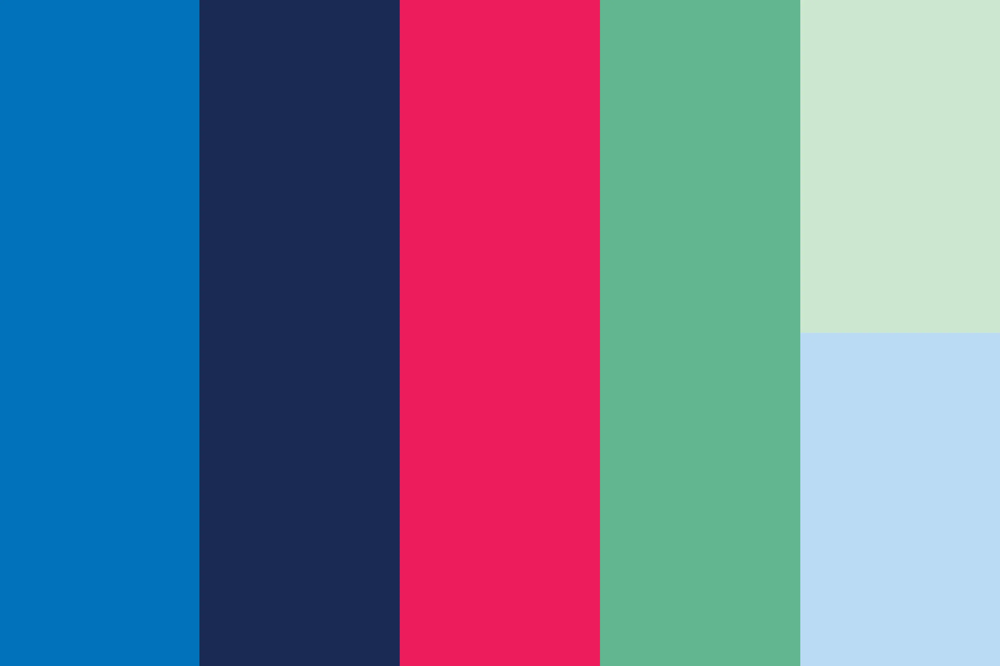
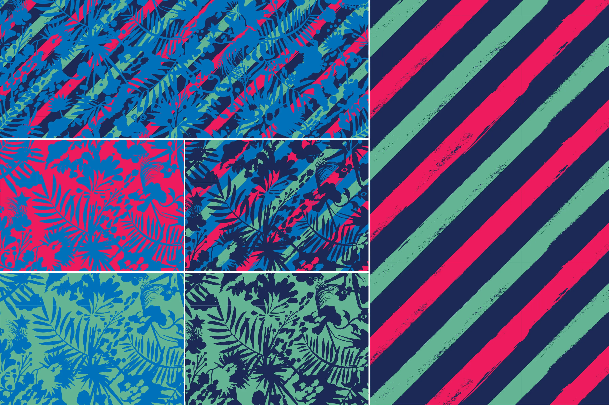
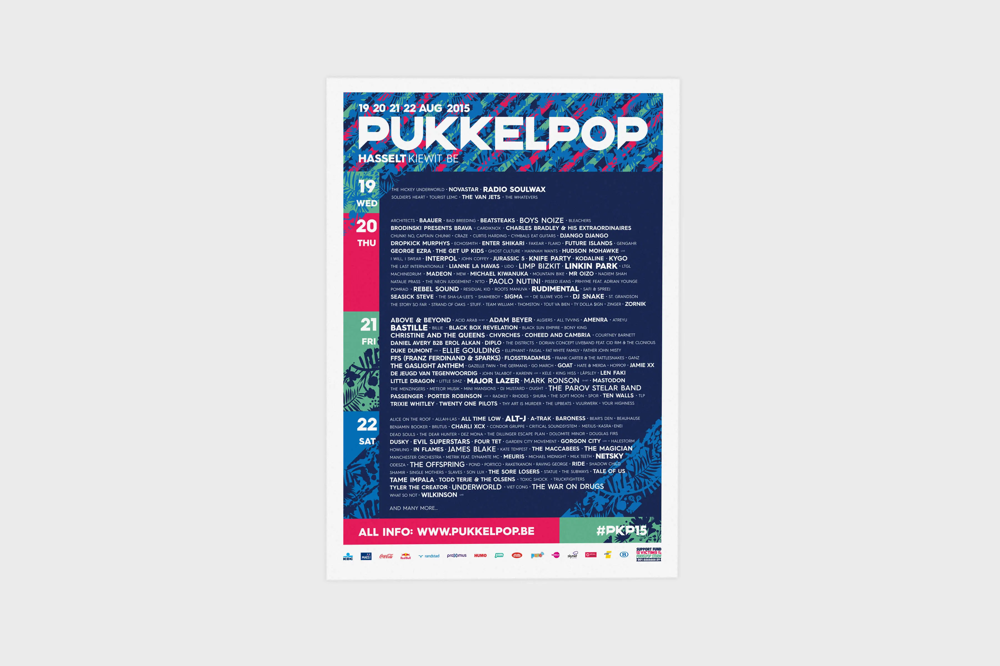
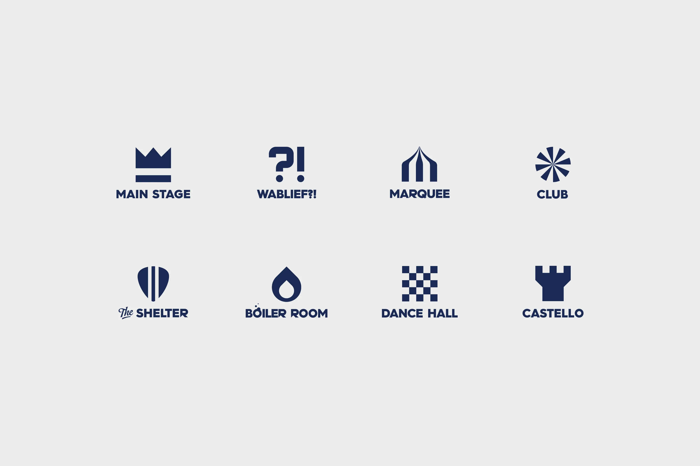
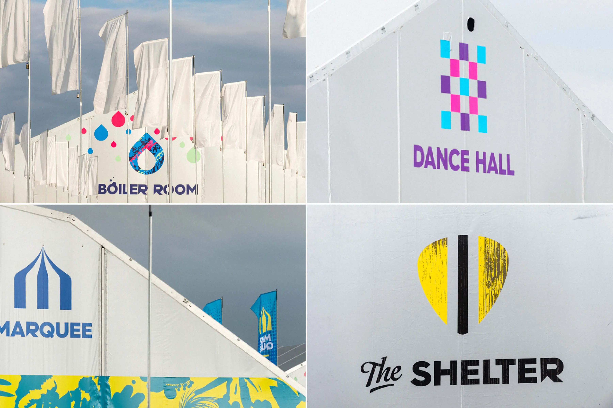
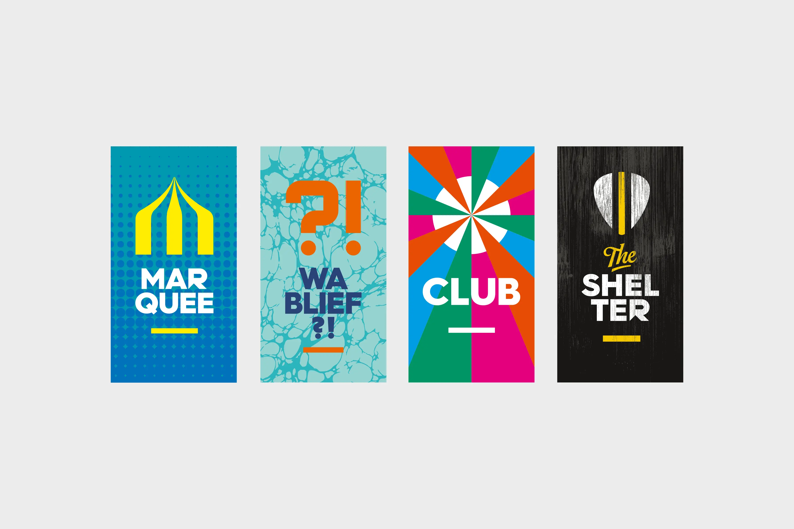
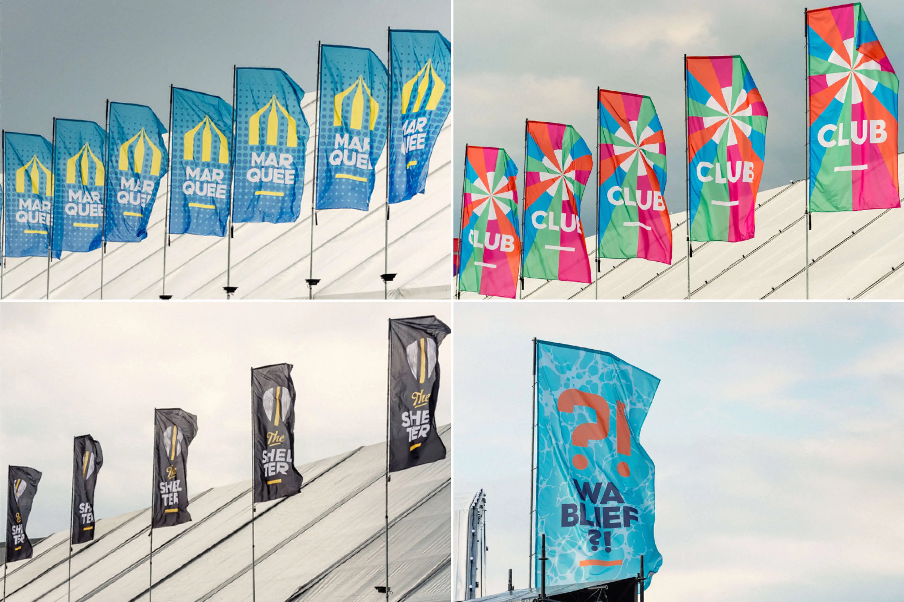
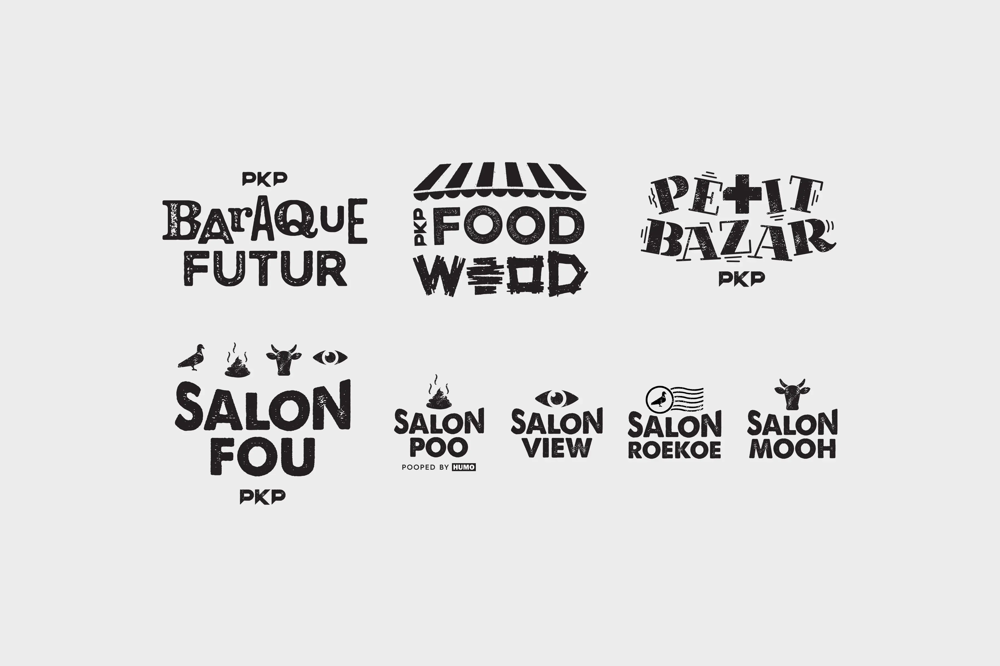
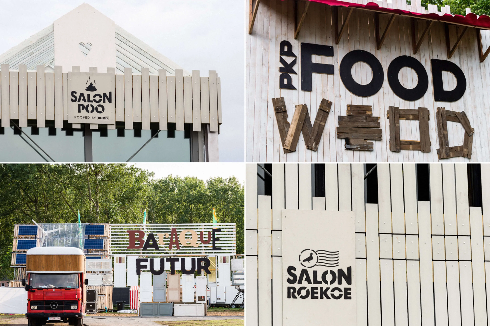
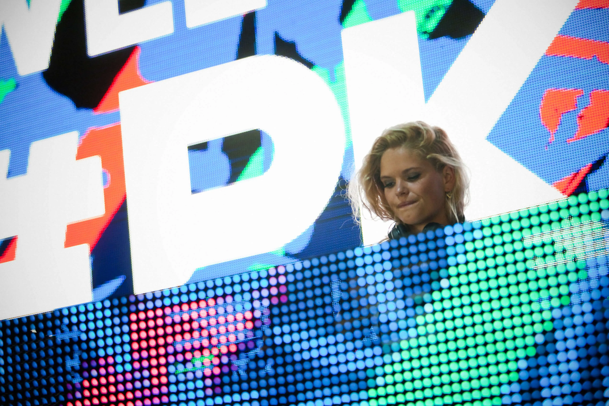
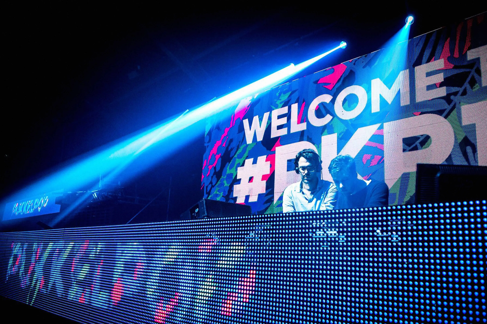